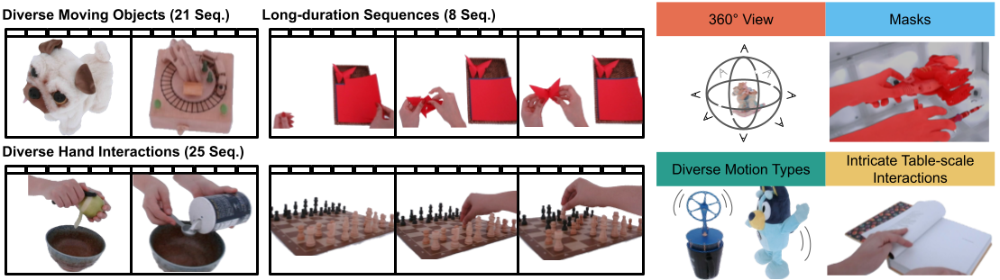

DiVA360: The Dynamic Visual-Audio Dataset for Immersive Neural Fields
- Anonymous Authors


Video
Abstract
Advances in neural fields are enabling high-fidelity capture of the shape and appearance of static and dynamic scenes. However, their capabilities lag behind those offered by representations such as pixels or meshes due to algorithmic challenges and the lack of large-scale real-world datasets. We address the dataset limitation with DiVA-360, a real-world 360° dynamic viso-audio dataset with synchronized multimodal visual, audio, and textual information about table-scale scenes. It contains 46 dynamic scenes, 30 static scenes, and 95 static objects spanning 11 categories captured using a new hardware system using 53 RGB cameras at 120 FPS and 6 microphones for a total of 8.6M image frames and 1360 s of dynamic data. We provide detailed text descriptions for all scenes, foreground-background segmentation masks, category-specific 3D pose alignment for static objects, as well as metrics for comparison.
Downloading the Data
We store our dynamic and static dataset on Globus, so to download the data to your local machine, we use Globus Command Line Interface (Globus-CLI) and Globus Connect Personal (GCP). You will first need to install GCP. Follow these instructions depending on your machine:
Note: When you are installing GCP, you will have to name your collection/endpoint. You are free to name it however you choose, but we suggest naming it "<first name> <last name> personal machine".Next, you will need to install Globus-CLI and login. Run the following commands:
$ pip install globus-cliThis will take you to a login page. You can either log in through a listed institution, through any Google account, or through an ORCID iD. After logging in, you will see a terms of service page. To continue, click "Allow".
$ globus login
To download the data, you will be copying the data from the DiVA360 endpoint to the endpoint you just created on your local machine when you installed GCP. First, setup the DiVA360 endpoint:
$ diva360_ep=1c8e9e50-d2b6-46cf-a81a-1ce023812799Next, setup your personal endpoint:
$ globus endpoint search <collection/endpoint name when setting up GCP>Important Note: To transfer to your GCP endpoint, the GCP software must be running and connected for the transfer to complete. However, you can close your terminal after the transfer has started.
$ personal_ep=<endpoint ID>
To transfer the whole dynamic or static dataset, use the following command:
$ globus transfer $diva360_ep:/<dynamic or static> $personal_ep:<path to destination>/<dynamic or static> --recursiveYou can also transfer an individual file or folder from the dataset (note that the "--recursive" flag is only needed for folders):
$ globus transfer $diva360_ep:<path to file or folder> $personal_ep:<path to destination>/<file or folder name> --recursiveYou can also transfer multiple files or folders at once using the batch transfer feature. Here is an example:
$ globus transfer --batch batch_transfer.txt $diva360_ep $personal_epAssuming you have the following batch_transfer.txt file:
# to copy a fileTo check the status of your transfer, use the following command:
<path to file> <path to destination>/<file name>
# to copy a folder
<path to folder> <path to destination>/<folder name> --recursive
$ globus task show <task ID>Here are the details for the dynamic and static dataset structures:
Dynamic Dataset Structure
-
|_ assets
- |_ all_videos (I-NGP and MixVoxels rendered videos)
-
|_ calib
- |_ optim_params.txt(refined camera parameters)
- |_ params.txt (unrefined camera parameters)
- |_ transforms.json (unrefined camera parameters)
- |_ transforms_optim.json (refined camera parameters)
-
|_ objects
-
|_ <dynamic sequence>
-
|_ calib
- |_ transforms.json (refined camera parameters without distortion factor)
- |_ transforms_optim.json (refined camera paramters with distortion factor)
-
|_ dynamic_data
- |_ frames_1 (undistored, segmented images of 41 cameras)
-
|_ I-NGP
- |_ test (test view rendering)
- |_ train (per-frame I-NGP weights)
- |_ traj (trajectory rendering)
-
|_ mixvoxels
-
|_ <dynamic_sequence_*> (mixvoxels of 150
frames)
- |_ <dynamic_sequence_*.th> (model checkpoint)
- |_ imgs_hr_spiral_all (spiral trajectory rendering at 2k resolution)
- |_ imgs_test_all (test view renderings)
- |_ imgs_test_all_white (test view rendering with white background)
-
|_ <dynamic_sequence_*> (mixvoxels of 150
frames)
- |_ transforms_circle.json (circular rendering trajectory parameters)
- |_ transforms_circle_hr.json (circular trajectory parameters at 2k resolution_
- |_ transforms_spiral_hr.json (spiral trajectory parameters at 2k resolution)
- |_ transforms_test.json (camera parameters of 6 testing views)
- |_ transforms_train.json (35 training views)
- |_ transforms_val.json (same as transforms_test.json)
- |_ image (resampled raw data at 30 FPS)
- |_ segmented_ngp (segmented, resampled data at 30 FPS)
- |_ transforms.json (same as calib/transforms.json)
- |_ masks (manual segmentation maps for hourglass, world globe, and plasma ball)
-
|_ calib
- ...
-
|_ <dynamic sequence>
-
|_ raw_data
- |_ synced (synced raw data without audio)
- |_ syncedaudio (raw data synced with audio)
Static Dataset Structure
-
|_ static-dataset
-
|_ <object/scene>
-
|_ calib
- |_ params.txt (camera parameters)
- |_ to_skip.txt (for some objects/scenes, cameras to skip)
- |_ image (raw image data)
- |_ refined_segmentation (segmented data)
- |_ desciption.json (text description)
-
|_ I-NGP
- |_ train (checkpoint and sigma values for canonicalization)
- |_ traj (trajectory renderings)
- |_ <object/scene>.csv (evaluation metric results and other training information)
- |_ mesh.ply (object/scene mesh)
-
|_ calib
- ...
-
|_ <object/scene>
-
|_ canonical-dataset
-
|_ <object category>
- |_ train (organized training data)
- |_ val (organized val data)
- |_ data (all data)
- |_ <object category>.h5 (to calculate metrics)
-
|_ results
- |_ canonical_rendering (resulting canonical renderings)
- |_ checkpoints (model checkpoints)
- |_ <object category>.h5 (to calculate metrics)
- |_ <object category>_canonical.h5 (to calculate canonicalization metrics)
- |_ <object category>_rotations.h5 (to calculate rotation metrics)
- ...
-
|_ <object category>
Dynamic Data Examples
Note: these videos have sound
Put Fruit Data
Penguin Data
Dynamic Baseline Examples
Note: these videos have sound
Put Fruit Per Frame Instant NGP
Penguin Per Frame Instant NGP
Comparison Between Instant NGP and Mixvoxels
Note: these videos have sound
Wolf Per Frame Instant NGP
Wolf Mixvoxels
Xylophone Per Frame Instant NGP
Xylophone Mixvoxels
Static Data Examples
Note: only 48/53 cameras are shown

car00_random data

fruit00_random data

scene00_clean data

scene00_messy2 data
Static Baseline Examples
car00_random Instant NGP
fruit00_random Instant NGP
scene00_clean Instant NGP
scene00_messy2 Instant NGP